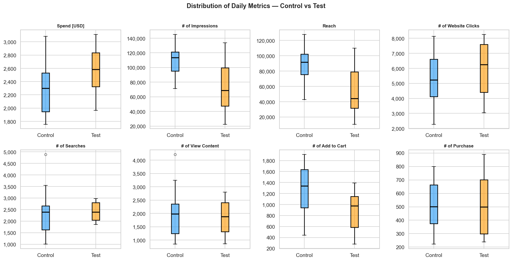
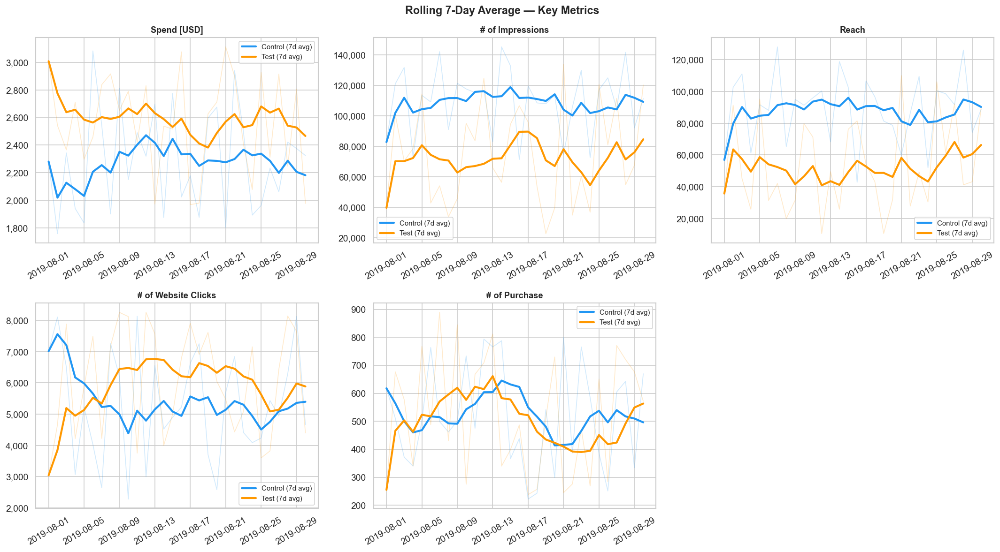

Marketing Campaign
A/B Test Analysis
To measure the true impact of a new marketing strategy, a company must run a Test campaign simultaneously with a Control campaign. The Control group serves as a strict baseline, representing how users behave under the current standard strategy. Running both at the exact same time isolates the new strategy from outside variables such as seasonal trends, day-of-week fluctuations, or broader market shifts. This ensures that any observed changes in user behavior are caused directly by the campaign itself, not external factors.
However, simply comparing the final metrics of these two campaigns is not enough. Daily marketing data is naturally volatile. Conducting an A/B testing helps separate the true signal from the noise, ensuring the company does not scale its budget based on random chance.
Campaign Behavior & Variance

Figure 1: Distribution Boxplots — Control vs Test
Looking first at daily spend, the Test campaign operated on a consistently higher budget, with a median daily spend of $2,574 compared to Control's $2,289.
However, this increased budget did not translate into greater volume. The Test campaign generated fewer impressions and reached fewer unique users. Its distribution also reveals a much wider interquartile range (IQR), indicating that day-to-day reach was highly volatile compared to the stability of the Control group.
At the website click stage, the pattern shifts. Both distributions overlap considerably, with the Test campaign's median sitting slightly higher. Generating an equal or greater number of clicks from a significantly smaller pool of impressions indicates a much stronger click-through rate for the Test creatives.
Moving deeper into the funnel, the Control group establishes a clear advantage at the add-to-cart stage. The Control distribution sits entirely higher than Test, reflecting a persistent mid-funnel advantage rather than a few isolated spikes.
At the purchase step, the two distributions overlap almost perfectly, sharing the same median and spread. The compounding differences observed earlier in the funnel entirely cancel each other out by checkout.
Cost Efficiency (CPM vs CPA)
When evaluating overall cost efficiency, the Control campaign is superior at both ends of the funnel. It secures impressions at a significantly lower CPM ($20.86 compared to $34.36 for Test). This upfront efficiency translates directly into a cheaper final conversion. Ultimately, Control acquires a paying customer for a CPA of $4.38, while the Test campaign costs $4.92 per acquisition.
Daily Metric Trends
To look more detail at the comparison, we see the 7-day rolling average of these metrics.

Figure 2: Rolling 7-day average — Control (Blue) vs Test (Orange)
Spend tells a consistent story. Orange (Test) runs above blue (Control) for almost the entire month. There is no period where Control outspends Test. The gap is stable, not growing or shrinking.
Impressions and Reach show the opposite. Control (blue) sits higher throughout, and the gap is large. Control regularly reached 120,000–140,000 impressions on good days, while Test fluctuated more and peaked lower. The two metrics tell the same story, Control brought more reach, every day.
Website Clicks is where the separation breaks down. The two lines cross repeatedly throughout August, with neither group holding a clear advantage for long. Both hover in a similar range. This is the first metric where the campaigns perform at roughly the same level, despite the impression gap seen earlier.
Purchases brings everything back to parity. The two lines are almost inseparable. They cross constantly, in both directions, with no consistent leader.
Taken together, the line plots trace a clear pattern: Control dominates at the top of the funnel, both campaigns converge in the middle, and they arrive at virtually the same outcome at the bottom.
Funnel Analysis
The 7-stage marketing funnel was computed using 30-day aggregate totals, with each stage expressed as a percentage of total Impressions.
| Stage | Control Total | Test Total | Ctrl Stage→Stage % | Test Stage→Stage % | Ctrl Cumulative % | Test Cumulative % |
|---|---|---|---|---|---|---|
| Impressions | 3,290,663 | 2,237,544 | 100.0% | 100.0% | 100.00% | 100.00% |
| Reach | 2,668,082 | 1,604,747 | 81.1% | 71.7% | 81.08% | 71.72% |
| Website Clicks | 159,527 | 180,970 | 6.0% | 11.3% | 4.85% | 8.09% |
| Searches | 66,808 | 72,569 | 41.9% | 40.1% | 2.03% | 3.24% |
| View Content | 58,354 | 55,740 | 87.3% | 76.8% | 1.77% | 2.49% |
| Add to Cart | 39,039 | 26,446 | 66.9% | 47.5% | 1.19% | 1.18% |
| Purchase | 15,662 | 15,637 | 40.1% | 59.1% | 0.48% | 0.70% |
Let's start at the top of the funnel. Control begins with a significant volume advantage, serving over a million more impressions than Test. It is also more efficient at finding unique users, converting 81.1% of those impressions into reach compared to Test's 71.7%.
At the click stage, the trend reverses. Despite reaching a million fewer people, Test generates more absolute website clicks (180,970 versus 159,527). It converts 11.3% of its reached audience into clicks, nearly double the 6.0% rate for Control.
Once users arrive on the site, both groups behave similarly at first. Roughly 40% to 42% of clicks result in a product search. However, Test begins to lose momentum moving from a search to viewing a product. Control retains 87.3% of users at this step, while Test retains 76.8%.
The widest performance gap appears at the add-to-cart stage. Control successfully moves 66.9% of its content viewers into the cart phase. Test struggles heavily here, dropping to a 47.5% transition rate. This is a clear mid-funnel bottleneck for the Test campaign.
At the final step, the pattern flips one last time. Control pushes far more users to the cart, but only 40.1% of them follow through with a purchase. Test users who make it this far are highly committed, converting to buyers at 59.1%.
These opposing bottlenecks cancel each other out entirely. Control wins the mid-funnel volume, while Test wins the final closing rate. The end result is a near exact tie: 15,662 purchases for Control, and 15,637 for Test.
Statistical Significance Testing
Because we spent more budget on the Test campaign, we naturally expect it to drive better results. To find out if it actually did, we need to test it statistically.
Every test begins with a null hypothesis. This is our baseline assumption that nothing special is happening—that the Test campaign is, in fact, no better than Control. Our goal is to see if the data is strong enough to prove that assumption is wrong.
To do this, we run each metric through a strict sequence. First, we check if the daily data follows a normal distribution (Shapiro-Wilk test). If both groups are normal, we check their variances (Levene's test) to choose the right t-test. If the data is non-normal, we default to the Mann-Whitney U test instead. Finally, because we are testing so many different metrics at once, we apply a Bonferroni correction. Every time you run a statistical test, there is a small risk of getting a false positive by pure chance. If you run enough tests, a false positive becomes almost guaranteed. The Bonferroni correction prevents this by raising the bar for what counts as significant, keeping our final results honest.
| Metric | Test Used | p-value | Bonferroni p | Significant? |
|---|---|---|---|---|
| CTR (%) | Mann-Whitney U | 0.0001 | 0.0013 | YES |
| Reach Rate (%) | Mann-Whitney U | 0.9741 | 1.0000 | No |
| View Content Rate (%) | Mann-Whitney U | 0.9232 | 1.0000 | No |
| Add-to-Cart Rate (%) | Mann-Whitney U | 0.9962 | 1.0000 | No |
| Cart-to-Purchase Rate (%) | Mann-Whitney U | 0.0001 | 0.0013 | YES |
| Overall Conversion (%) | Mann-Whitney U | 0.8614 | 1.0000 | No |
| # of Impressions | Welch's t-test | 1.0000 | 1.0000 | No |
| Reach | t-test | 1.0000 | 1.0000 | No |
| # of Website Clicks | Mann-Whitney U | 0.0687 | 0.8931 | No |
| # of Searches | Mann-Whitney U | 0.0954 | 1.0000 | No |
| # of View Content | t-test | 0.6877 | 1.0000 | No |
| # of Add to Cart | Mann-Whitney U | 0.9998 | 1.0000 | No |
| # of Purchase | Mann-Whitney U | 0.5265 | 1.0000 | No |
The table above details the full results of our statistical testing. After evaluating all 13 metrics and applying the Bonferroni correction, we reject the null hypothesis for only two metrics: Click-Through Rate (CTR) and Cart-to-Purchase Rate. Both demonstrate a highly significant advantage for the Test campaign.
Looking closely at the data, the Test campaign's CTR effectively doubled, rising from a daily mean of 5.08% to 10.24%. Further down the funnel, the Test campaign also proved significantly better at closing sales, converting 61.8% of cart additions into purchases compared to Control's 45.4%. Both of these findings carry a "Medium" effect size. This tells us that the difference is not just a mathematical technicality, but a meaningful behavioral shift in how users interact with the ads.
The remaining eleven metrics failed to reach statistical significance. Notably, for raw volume metrics (like Impressions and Reach) and mid-funnel metrics (like Add-to-Cart Rate), the corrected p-values equal exactly 1.000. Because our one-tailed test specifically checked if the Test campaign performed better, and Control actually generated higher daily means in these areas, the test confirms there is zero statistical evidence for a Test victory here.
Business Recommendations
Adopt a hybrid campaign strategy (Immediate)
The data shows that these two campaigns excel at opposite ends of the funnel. Because the Control campaign secures impressions at a roughly 40% lower CPM, it should be used as the primary engine for broad brand awareness and top-of-funnel reach. In contrast, the Test campaign's creatives are highly effective at driving action which generates double the CTR and significantly higher cart conversions. Therefore, the Test campaign should be redeployed specifically for middle- and bottom-funnel retargeting. In those later stages, paying a premium for high-intent clicks is justified by the superior closing rate.
Investigate mid-funnel leakage (Short-term)
Despite its exceptional CTR, the Test campaign suffers severe user drop-off immediately after the click. It loses 23.1% of users before they even view the content (compared to Control's 12.6%), and drops another 52.6% before they add an item to the cart (compared to Control's 33.1%). This pattern strongly suggests a disconnect between the ad and the landing page. We recommend an immediate UX audit of the Test campaign's post-click journey. Specifically, the team should look for slow page load times, mismatched messaging between the ad creative and the product page, or friction in the browsing layout that might be causing these motivated users to bounce.